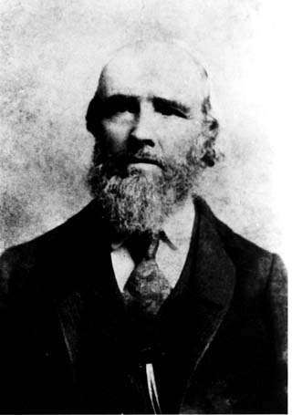
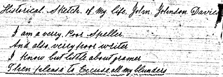

John Johnson Davies

Historical Sketch of My Life. John Johnson Davies

I am a verry Poor Speller
And also verry poor writer
I know but little about gramer
Then please to Excuse all my blunders
(Click on the picture or handwritten text to see the pages.)
Back to Buchanan/Davis Family Organization web pages.